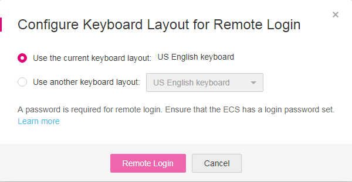
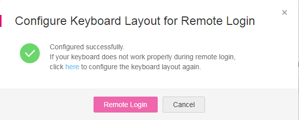
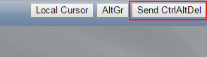
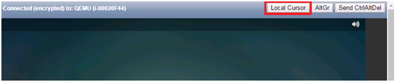

Scenarios
This section describes how to use VNC provided on the management console to log in to an ECS. This function applies to emergency O&M. In other scenarios, you are advised to log in to ECSs using SSH or MSTSC.
Constraints
- The remote login function is implemented using customized ports. Therefore, before attempting to log in remotely, ensure that the port to be used is not blocked by the firewall. For example, if the remote login link is xxx:8002, ensure that port 8002 is not blocked by the firewall.
- If the client OS uses a local proxy and the firewall port cannot be configured on the local proxy, disable the proxy mode and then try logging in remotely.
- Certain G series of ECSs do not support remote login provided by the management console. If you need to remotely log in to the ECSs, install the VNC server on them. For details, see GPU-accelerated ECSs. You are suggested to log in to the ECSs using MSTSC.
Login Notes
- When you log in to the ECS using VNC, four types of keyboards will be used. These are described in Table 1.
Table 1 Keyboard types Keyboard Type
Description
Keyboard Language
Physical keyboard
Used by the terminal and allows terminal data input.
Selected by users locally.
Input method keyboard on the terminal
Used for logging in to the management console from a terminal, such as a computer. The keyboard input method of the terminal must comply with the physical keyboard language type. In this way, the entered data can be correctly transferred from the physical keyboard to the VNC client.
Selected by users locally.
VNC keyboard
Used for VNC logins. The VNC keyboard input method must comply with the physical keyboard language type. In this way, the entered data can be correctly transferred from the VNC client to the ECS OS.
NOTE:The English keyboard is used by default. The system also supports other keyboard languages.
Can be configured through the management console.
For instructions about how to select a VNC keyboard language, see Log In to a Windows ECS Using an English Keyboard and Log In to a Windows ECS Using a Non-English Keyboard.
ECS OS keyboard
Input method keyboard configured in the ECS OS. Ensure that this input method complies with the physical keyboard language type for correct response to the entered data transferred from the VNC client.
NOTE:- The default OS keyboard language of an ECS created using a public image is English. For additional information, see Public Images Introduction.
- The OS keyboard language of an ECS created using a private image is customized.
Configured by users locally.
For instructions about how to change an ECS OS keyboard language, see Changing the OS Keyboard Language.
- When you log in to the ECS using VNC, ensure that your configured keyboard language is correct.The entered data is as expected only if the input method keyboard on the terminal, the VNC keyboard, and the ECS OS keyboard languages are the same as the physical keyboard language. For details about language configuration in the four types of keyboards, see Table 2.
Table 2 Language configuration in the four types of keyboards Physical Keyboard
Input Method Keyboard on the Terminal
VNC Keyboard
ECS OS Keyboard
Permission
English
English
English
English
Yes
German
No
German
English
No
German
No
German
English
English
No
German
No
German
English
No
German
No
German
English
English
English
No
German
No
German
English
No
German
No
German
English
English
No
German
No
German
English
No
German
Yes
- If the password used when you create the ECS is entered using the English keyboard, you must use the English keyboard to enter the password when logging in to the ECS later.
Log In to a Windows ECS Using an English Keyboard
- Log in to the management console.
- Click
 in the upper left corner and select your region and project.
in the upper left corner and select your region and project. - Under Computing, click Elastic Cloud Server.
- Obtain the password for logging in to the ECS.
Before logging in to the ECS, you must have the login password.
For instructions about how to obtain the password for logging in to a Windows ECS, see Obtaining the Password for Logging In to a Windows ECS.
- In the search box above the upper right corner of the ECS list, enter the ECS name and click for search.
- Locate the row containing the ECS and click Remote Login in the Operation column.
- In the displayed Configure Keyboard Layout for Remote Login dialog box, select the English keyboard.Figure 1 Keyboard layout configuration
 - Click Remote Login.
- (Optional) If you have changed the system language, in the dialog box that is displayed, click Remote Login.Figure 2 Remote Login
 - (Optional) When the system displays "Press CTRL+ALT+DELETE to log on", click Send CtrlAltDel in the upper part of the remote login page to log in to the ECS.Figure 3 Send CtrlAltDel
 - (Optional) If you need your cursor to be displayed on the remote login page, click Local Cursor.Figure 4 Local Cursor
 - Enter the ECS password as prompted.
Log In to a Windows ECS Using a Non-English Keyboard
- Log in to the management console.
- Click in the upper left corner and select your region and project.
- Under Computing, click Elastic Cloud Server.
- Obtain the password for logging in to the ECS.
Before logging in to the ECS, you must have the login password.
For instructions about how to obtain the password for logging in to a Windows ECS, see Obtaining the Password for Logging In to a Windows ECS.
- In the search box above the upper right corner of the ECS list, enter the ECS name, IP address, or ID, and click
 for search.
for search. - Locate the row containing the ECS and click Remote Login in the Operation column.
- In the displayed Configure Keyboard Layout for Remote Login dialog box, select the keyboard that suits your language.
- When logging in to the ECS using VNC for the first time, select the default English keyboard. The ECS OS uses the English keyboard by default.
- If you have changed the keyboard language of the ECS OS, select the keyboard language to which you have changed.
Figure 5 Keyboard layout configuration
- Click Remote Login.
- (Optional) If you have changed the system language, in the dialog box that is displayed, click Remote Login.Figure 6 Remote Login
- (Optional) When the system displays "Press CTRL+ALT+DELETE to log on", click Send CtrlAltDel in the upper part of the remote login page to log in to the ECS.Figure 7 Send CtrlAltDel
- (Optional) If you need your cursor to be displayed on the remote login page, click Local Cursor.Figure 8 Local Cursor
- Enter the ECS password as prompted.
- When logging in to the ECS using VNC for the first time, use the English keyboard to enter the password. After you have logged in to the ECS, see Changing the OS Keyboard Language to change the keyboard language of the ECS OS. You can then select the keyboard language and enter the password the next time you log in.
- If you have changed the keyboard language of the ECS OS, ensure that the keyboard language in use, the keyboard language selected in step 7, and the changed OS keyboard language are all the same.
Changing the OS Keyboard Language
Switch the input method or open the soft keyboard before entering characters. To do so, click the function menu icon and select soft keyboard and keyboard layout.
Configuration Example
Scenarios
- Physical keyboard: German
- Input method keyboard on the terminal: English
- VNC keyboard: English
- ECS OS keyboard: English
In this case, you must change the languages of the other three types of keyboards to the same language as the physical keyboard for expected data entering. For details, see the Solution 1 row in Table 3.
- |
Physical Keyboard |
Input Method Keyboard on the Terminal |
VNC Keyboard |
ECS OS Keyboard |
|---|---|---|---|---|
Before configuration |
German |
English |
English |
English |
Solution 1 |
German |
German |
German |
German |
Solution 2 |
English |
English |
English |
English |
Procedure
- Locally configure the language, for example, German, in the input method keyboard on the terminal.
- Set the VNC keyboard language to English.

When you log in to the ECS using VNC for the first time, the default ECS OS keyboard language is English. Therefore, you must set the VNC keyboard language to English.
- Log in to the ECS and change the ECS OS language to German.
For details, see Changing the OS Keyboard Language.
- Change the VNC keyboard language to German.
For details, see Log In to a Windows ECS Using a Non-English Keyboard.
To set the languages on the four types of keyboards to all be the same, repeat steps 1 to 4.
During the configuration, if English characters cannot be entered using the current physical keyboard, use the English soft keyboard to modify the configuration described in the Solution 2 row of Table 3. In such a case, you only need to use the English soft keyboard to enter characters.
- To enable the Windows English soft keyboard, choose Start > Run, enter osk, and press Enter.
- The method of enabling the Linux English soft keyboard varies depending on the OS version and is not described in this document.
Helpful Links
For FAQs about VNC-based ECS logins, see the following links:
- What Browser Version Is Required to Remotely Log In to an ECS?
- What Should I Do If I Cannot Use the German Keyboard to Enter Characters When I Log In to a Linux ECS Using VNC?
- Why Cannot I Use the MAC Keyboard to Enter Lowercase Characters When I Log In to an ECS Using VNC?
- What Should I Do If the Page Does not Respond After I Log In to an ECS Using VNC and Do Not Perform Any Operation for a Long Period of Time?
- What Should I Do If I Cannot View Data After Logging In to an ECS Using VNC?
- Why Are Characters Entered Through VNC Still Incorrect After the Keyboard Language Is Switched?
- Why Does a Blank Screen Appear While the System Displays a Message Indicating Successful Authentication After I Attempted to Log In to an ECS Using VNC?